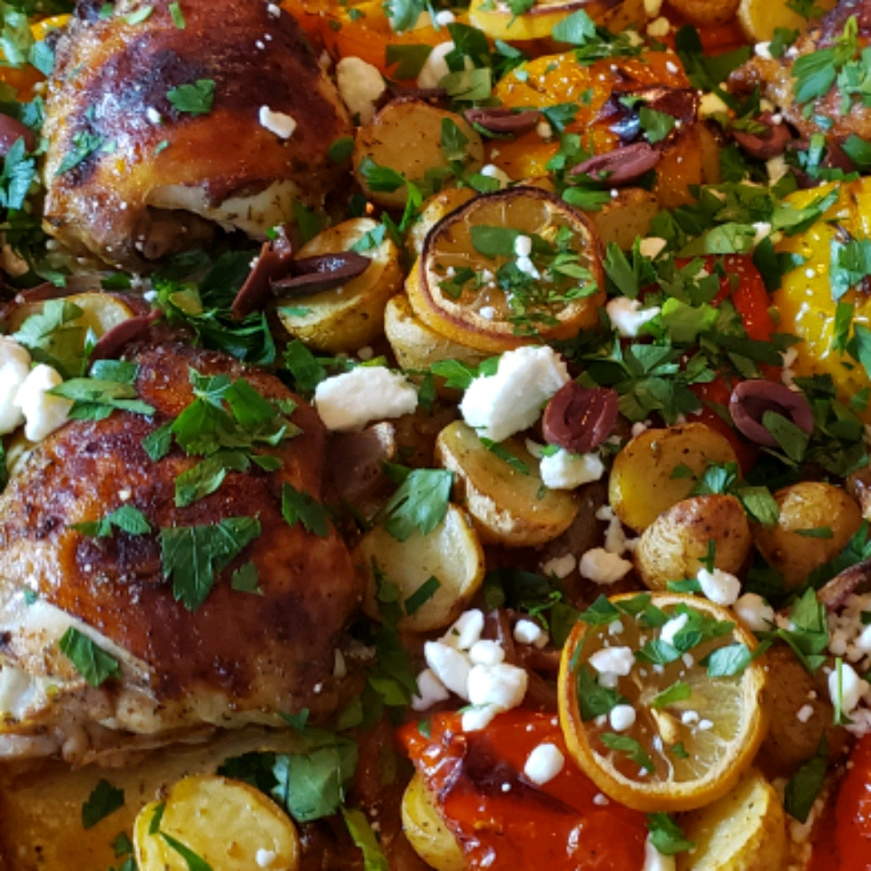

Mediterranean Chicken Sheet Pan Dinner

Ingredients
- ¼ cup extra-virgin olive oil
- lemon, juiced
- 2 tablespoons balsamic vinegar
- 1 teaspoon dried tarragon
- 1 teaspoon dried oregano
- 1 teaspoon paprika
- 1 teaspoon salt
- ½ teaspoon black pepper
- 4 chicken thighs with skin
- 1 small red onion, sliced into petals
- 8 mini bell peppers, halved lengthwise and seeded
- 1 pound baby potatoes, halved
- 1 lemon, sliced
- ¼ cup crumbled feta cheese
- ¼ cup fresh parsley, chopped
- 8 pitted kalamata olives
Directions
- Preheat the oven to 425 degrees F (220 degrees C). Line a large rimmed baking sheet with aluminum foil.
- Whisk olive oil, juice of 1 lemon, vinegar, tarragon, oregano, paprika, salt, and pepper together in a large bowl. Add chicken thighs, onion, baby bell peppers, and potatoes. Stir until everything is evenly coated.
- Transfer vegetable-chicken mixture to the prepared baking sheet and spread in an even layer. Scatter lemon slices over the vegetables, making sure to leave the chicken uncovered so that the skin will brown.
- Bake in preheated oven for about 40 minutes. Remove from oven and top with feta, parsley, and olives.